Wildpflanzen
Bestimmung
Register
Systematik
Besucher
<
Weisse, fünf Blütenblätter
>
Weisse, fünf Blütenblätter
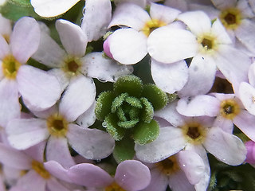
Alpen Mannsschild / Androsace Alpina
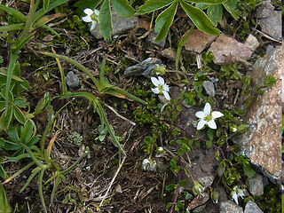
Zweiblütige Sandkraut / Arenaria Biflora
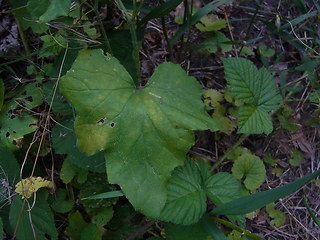
Rotbeerige Zaunrübe / Bryonia Dioica
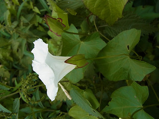
Echte Zaunwinde / Calystegia Sepium
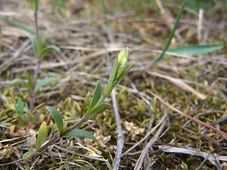
Gewöhnliches·acker Hornkraut / Cerastium Arvense
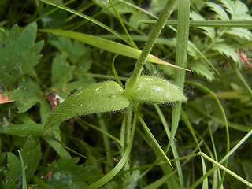
Gewöhnliches Hornkraut / Cerastium Holosteoides
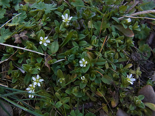
Sand Hornkraut / Cerastium Semidecandrum
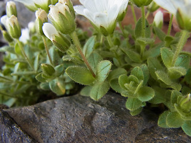
Einblütiges Hornkraut / Cerastium Uniflorum
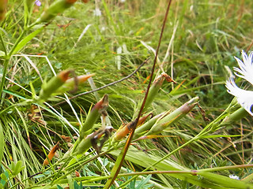
Montpellier Nelke / Dianthus Monspessulanus
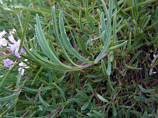
Kriechendes Gipskraut / Gypsophila Repens
Europäische Wasserfeder, wasserprimel / Hottonia Palustris
Purgier Lein / Linum Catharticum
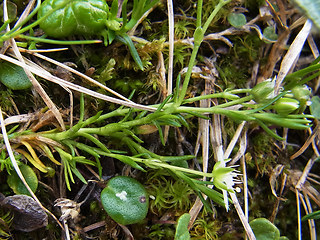
Bewimperte Nabelmiere / Moehringia Ciliata
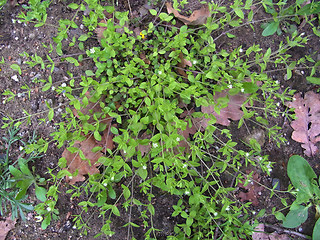
Dreinervige Nabelmiere / Moehringia Trinervia
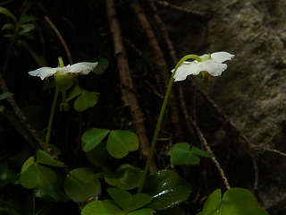
Moosauge / Moneses Uniflora
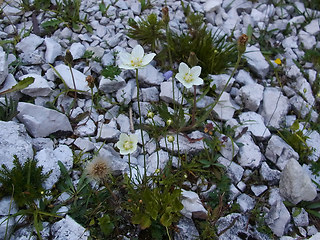
Sumpf Herzblatt / Parnassia Palustris
Stängel Fingerkraut / Potentilla Caulescens
Felsen Fingerkraut / Potentilla Rupestris
Rundblättriges Wintergrün / Pyrola Rotundifolia
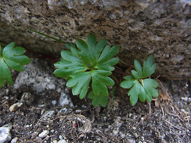
Gletscher Hahnenfuβ / Ranunculus Glacialis
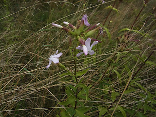
Echtes Seifenkraut / Saponaria Officinalis
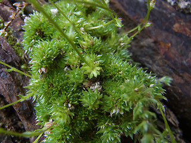
Rauer Steinbrech / Saxifraga Aspera
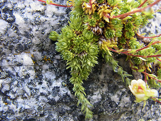
Moos Steinbrech / Saxifraga Bryoides
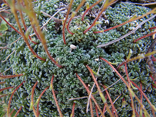
Blaugrüne Steinbrech / Saxifraga Caesia
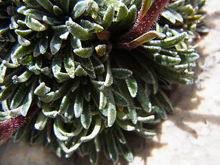
Krusten Steinbrech / Saxifraga Crustata
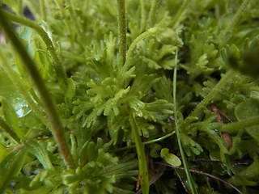
Furchen Steinbrech / Saxifraga Exarata
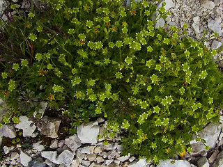
Moschus Steinbrech / Saxifraga Moschata
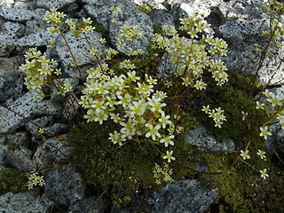
Rispen Steinbrech / Saxifraga Paniculata
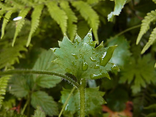
Rundblättriger Steinbrech / Saxifraga Rotundifolia
Stern Steinbrech / Saxifraga Stellaris
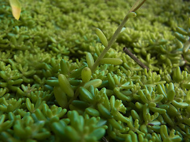
Weiβe Fetthenne / Sedum Album
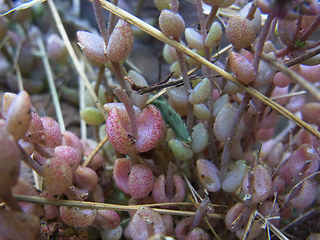
Dickblättrige Fetthenne / Sedum Dasyphyllum
Weiβe Lichtnelke / Silene Latifolia
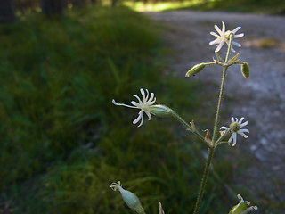
Nickendes Leimkraut / Silene Nutans
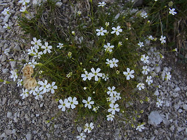
Vierzähniges Leimkraut / Silene Pusilla
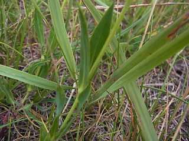
Gewöhnliches Leimkraut / Silene Vulgaris ssp. vulgaris
Schwarzer Nachtschatten / Solanum Nigrum
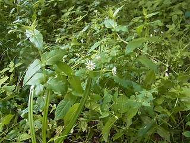
Gemeiner Wasserdarm / Stellaria Aquatica
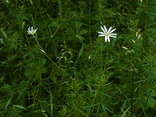
Gras Sternmiere / Stellaria Graminea
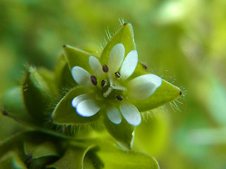
Gewöhnliche Vogelmiere / Stellaria Media
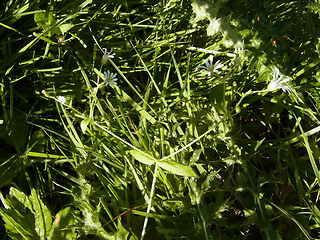
Hain Sternmiere / Stellaria Nemorum
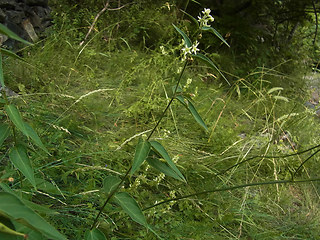
Weiβe Schwalbenwurz / Vincetoxicum Hirundinaria
nach oben